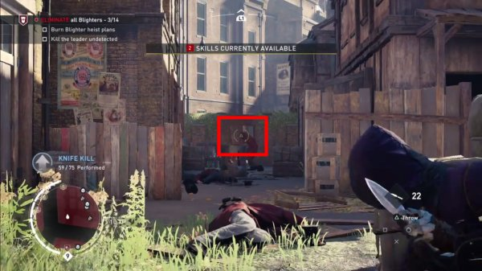

It's been a long time since I wanted to write a detailed explanation on how the series could improve in respect to AI and character upgrade because I believe that what was implemented in Syndicate is very limited and, with all due respect, makes very little sense.
I wanted to start by highlighting the main problems I have with the Syndicate system.
The Problems
Problem #1 - Lack of variety
I counted no more than eight different types of enemies in the game:
- 1. The supposedly strong bald guy
- 2. The guy with the small hat
- 3. The other guy with the small hat and moustache
- 4. The guy with a tall hat and a beard
- 5. The female sniper
- 6. The female fighter
- 7. The watcher
- 8. The royal guard
If the next game is to span across multiple cities I expect to meet more than just eight types of enemies.
Also, with the only exception of the sniper that can kill you from distance, all enemies act in the same way and can also be killed in the same way.
Which brings us to problem #2.
Problem #2 - The level is just a number
Enemies may look different but you can kill them with the same approach regardless of their type and level. It's also funny how enemies dressed in exactly the same way and equipped with the same weapon can have different levels as per the below screenshot:
Two of the triplets found a way to become stronger than their brother
One would believe that two guards wearing specific armour and carrying a particular type of weapon will be as equally strong because they underwent the same level of training but that's not the case in Syndicate.
Also, it doesn't make sense for a level 1 assassin to kill a level 9 enemy in the same way he kills a level 1 enemy; there is an 8-level gap between the two, there must be something to justify this impressive gap in level. And I'm not talking only about when you engage in combat.
Problem #3 - You know the level of the enemy with Eagle Vision
Eagle Vision may be a very powerful feature of the game but sometimes it takes away from realism. Later on I explain a solution of how the assassin should know the level of the enemy without using Eagle Vision.
Problem #4 - The skill tree to upgrade your assassin
In the game you earn experience points that you can use to unlock certain skills regardless of the way you approach the game. For example you may complete a number of main/side missions in stealth mode without ever engaging in combat yet you then spend the earned skill points on the "multi-finisher" combat skill. I mean, why should an assassin spend hours completing missions in stealth mode to then upgrade his combat attribute?
Problem #5 - The game doesn't ask for a second playthrough
Play it, complete it, forget about it. That's the reaction of many to Syndicate, including myself. When I did try to replay already-completed missions by applying self-imposed rules, I realised that it was still the same as my first playthrough. With what I'm proposing below, I believe a player will enjoy an almost ocmplete different experience on his second and third playthrough.
The Solution
We all agree that AC1 was very repetitive but - at least I still do - we still talk and remember the game as being special, in a league of its own. And it happens often to read comments by the fans of the series who say, "that is when I felt like an assassin" when they remember the good old days of Altair.
In my opinion, one of the reasons why we "felt like an assassin" in AC1 is investigation: we had to collect data, we had to plan, we had to investigate and only after going through all of that we were ready to finally assassinate the target.
I would bring that back.
Syndicate introduced a button bashing approach to complete missions and although Unity was more focused on stealth it was still a matter of, "welcome, this is the mission, good luck."
I would introduce what I'm calling the three steps of investigaton:
- 1. Research the enemy
- 2. Analyse the collected information yourself or by passing it to your informer(s) to know the level of the enemy
- 3. Investigate the area yourself or by sending one or more spies to do it for you
Before moving on, but I will explain this in as much detail as possible later on, understand that the level of your enemies can be from 1 to 10 and the level of the assassin can be from 0 to 10.
Research the enemy
Before even thinking of assassinating a target, before even thinking of engaging in combat, you have to collect data and information on your enemy.
I'm looking at having 30 different types of enemies in the game, three for each level, and you have to research each and one of them.
Enemies can be encountered either:
- 1. By roaming the map
- 2. By starting side/main missions
Once you encounter a new enemy, you gather information either:
- 1. By using Eagle Vision
- 2. By using the L1 button(on the PS4) as it was the case in ACIII's "Encyclopedia of the Common Man"

The player could study an enemy in the same way Connor gathered information on the people of the Homestead
Now this, alone, is not enough, because you still don't know the level, all you have is basic information on the enemy such as his armour, his weapon, etc.
To discover the level of the enemy you either tail him for a number of minutes or, since tailing missions were almost always criticised by players, you can assign the job to an informer.
The informer will start tailing the enemy and will also ask questions to discover the level. After a number of minutes, depending on the level of the informer, this information will be available in your log and all information on that particular enemy is now known.
You add informers to your brotherhood by completing a side mission, a liberation mission like ACIII or something similar. You will need more than one because an informer can be unavailable because busy researching a particular type of enemy. They also have to be trained. A level 1 informer will require 30 minutes to come back with results, a level 2 one will need 15 minutes and a level 3 information will require just 5 minutes.
Investigate the area before starting the mission
Through research you will start collecting data to know the level of all the different types of enemies in the game. But this, alone, may not be enough. Before starting a main or side mission you have to take a decision. You either decide to start the mission without having any information on the area where the mission takes place and this means that you could end up facing enemies whose level is greater than yours.
Or just like in AC1, you can continue with your investigation, in this case to understand how many guards are patroling the area and their respective level.
This could be done:
- 1. By doing it yourself. You will start the mission knowing that your objective is not necessarily to complete it but to investigate the area. Ideally you will hide and stay undetected until you decide that you have enough information on the mission. Clearly, by investigating the area yourself you may miss an enemy or two so there is the risk of believing that there are 45 enemies patroling the area when in reality there are 50. Still, this approach is useful for gathering information on yet-to-be-researched enemies.
- 2. By sending a spy. Just like the informer, the spy needs time to complete his job and return with the results. Spies also have to be trained and their level will determine how long they will take to investigate an area. For example, a Level 1 spy will need 30 minutes to investigate an area, a level 2 spy will need 15 and a level 3 spy will need just 5 minutes. To make it even more realistic, certain areas cannot be investigated by just one spy so you will have to send multiple spies at the same time. This feature is also useful to reduce the number of minutes required to investigate an area, for example two spies sent to investigate a small area will return after 15 minutes, 50% less than how much a single spy would have taken. When the spy returns he will tell you exactly how many guards are patroling the area and their levels. For example: 50 guards, 40% are L1, 30% are L2, 25% are L4 and 5% are L7. He will not be able to give you information on those yet-to-be-researched enemies. In that case, you have to either do the mission yourself to research these new enemies or else roam the area until you find one of them. Of course, since he knows it already, a spy sent to investigate an area a second time will spend only 5 minutes to come back with the results, regardless of his level.
- 3. By using the eagle. If rumours about the next game are true, you will have an eagle under your control. When unlocked, the eagle will be able to investigate an area and come back with the results. The advantage of the eagle is that it will only take 5 minutes to investigate the area and it will always give you accurate results, regardless of who the enemies are. So she will provide information even for non-researched enemies.

Your pet eagle will investigate an area in a heartbeat
It's decision time
You finally have all needed information to understand your mission approach. You know how many enemies are guarding the area and you know the level of all of them.
Let's re-analyse the results of the informer: 50 guards, 40% are L1, 30% are L2, 25% are L4 and 5% are L7.
Here we know that 5% of the enemies in the area are level 7 so if your assassin level is 5, you may either decide to upgrade one of your attribute levels to 7 or you take a risk and start the mission knowing that you have to be careful when approaching level 7 enemies in the area, which you can still kill by the way(explained below).
The Assassin Level
In the first part of my article I complained about the fact that at level 1, Jacob or Evie can assassinate a level 9 enemy without any problems. With what I'm suggesting this should not be possible anymore.
As explained previously, your assassin will start at level 0 but there isn't just one global level as it was the case in Syndicate. Instead, the assassin will have attributes such as:
| Noise | Throwing knife damage | Throwing knife precision | Throwing knife range | Agility | Combat | Eagle Vision | Health |
| 0 | 0 | 0 | 0 | 0 | 0 | Low | Low |
How would these work?
- Noise: This determines how much noise you will make when approaching a target either on the ground or from above. If this level is lower than your target's level, the target will hear you when you try to perform an (air) assassination.
- Throwing knife damage:. This determines how much of the target's health you will take when using a throwing knife. If this level is equal or higher than the target level, one knife is enough to kill him. Else you will need multiple knives.
- Throwing precision:. This determines the marker that appears on the screen when you want to throw a knife.
- Throwing range: Just because my throwing knife damage attribute is higher than the enemy's level it doesn't mean that I can kill him from anywhere. If this level is not very high then I have to be relatively close kill my target.
- Agility: This determines whether the assassin can kill from a hiding spot: haystack, ledge, corner, well, etc. If this level is lower than your target's level, the target will notice you when you try to assassinate him from a hiding spot.
- Combat: Determines the weapons you are able to carry and use. If this level is 2 you will not be able to use a weapon requiring level 3 and you won't be able to engage in combat with L3> targets.
- Eagle vision: This is one of the attributes which has low, medium and high instead of 0 to 10. Determines how powerful eagle vision will be where high would allow you to see through walls like in Syndicate.
- Health: This is another one of the attributes which has low, medium and high instead of 0 to 10. Determines how long the assassin takes to regenerate his health.
|
Just a dot! Throwing knife precision = 1 |

Gigantic! Throwing knife precision = 10 |
Different types of assassins
| Noise | Throwing knife damage | Throwing knife precision | Throwing knife range | Agility | Combat | Eagle Vision | Health |
| 3 | 6 | 2 | 2 | 0 | 0 | Low | Low |
Based on this information, we know that I trained my assassin for stealth and also that:
- I can (air) assassinate an enemy whose level is 1, 2 or 3 because the enemy will not hear me.
- I can kill an enemy whose level is 1 to 6 with a throwing knife.
- The knife marker will be small so I have to be very careful when aiming for a headshot.
- I have to be relatively close to him or else my throwing knife will not travel long enough to kill.
And if we are to again use the informer's data from above - 40% are L1, 30% are L2, 25% are L4 and 5% are L7 - we know that:
- - I can (air) assasinate or kill with a single throwing knife 70% of the enemies in the area, 40%(L1) + 30%(L2)
- - I have to kill with a throwing knife 25% of them, the L4 enemies.
- - I will struggle to kill 5% of the enemies, which, if my maths is correct, that's 2 enemies out of 50.
Let's analyse a different type of assassin:
| Noise | Throwing knife damage | Throwing knife precision | Throwing knife range | Agility | Combat | Eagle Vision | Health |
| 0 | 0 | 0 | 0 | 4 | 7 | 0 | 0 |
This assassin focused entirely on combat. Since his combat level is 7 he can engage in combat and kill all the 50 enemies in this area. But notice how he also focused on agility.
This particular assassin cannot (air) assassinate any of the 50 enemies guarding the area but if he is able to sneak and reach a hiding spot, like a haystack, he will be able to kill 95% of the enemies without engaging into combat.
The assassin's level 4 agility allows him to kill from a hiding spot 95% of the enemies in this area
Getting into more detail
It is clear that certain attributes will still allow you to kill your target even if your level is not high enough. For example, if your throwing knife damage is set to 6 and you want to kill a level 7 enemy, there should be some sort of algorithm which would allow you to accomplish your task with, let's say, 2x headshot throwing knives.
It would clearly make no sense at all to throw 50 headshot throwing knives and this level >6 target keeps walking around as if nothing happened just because your throwing knife damage is set to 6.
A simple algorithm is to use percentages where every level corresponds to 10% damage. So if your throwing knife damage is set to 2 and the enemy level is 10, you have to throw 5 knives to kill him. It's not recommended of course because in the game you will not be able to carry 35 knives like Evie in Syndicate.
With noise this will not be applied. If your noise level is set to 3 and you try to (air) assassinate an enemy who will hear you and move to avoid the hidden blade, you will end up inflicting zero damage and engaging in combat.
Upgrading informers and spies
I'm not looking at a lot of side missions to train your informers or spies, I'm actually looking at three levels for them, side missions which clearly focus on stealth. Maybe a mission where there are a number of enemies grouped together and you give instructions to the informer or to the spy about how to move from position A to position B without being detected. Actually, they could be similar to the den defense missions in Revelations where you position yourself at the top of a building and give out instructions to the informer/spy.
Or vice-versa. You ask the informer/spy to position himself at the top of a building, you complete the side mission yourself and when the mission is complete we take it for granted that the informer/spy understood what needs to be done in order not to be detected during research/investigation.
Upgrading the assassin
Contrary to how you upgrade informers and spies, your assassin has to go through much tougher challengers to upgrade each and every attribute.
This could be done either:
- 1. Through training
- 2. Via an automated process working in the background to understand what type of assassin you are
It is clear that to move from level 1 to level 2, you will have to complete a relative easy training mission but to move from level 5 to 6, 6 to 7, etc. things will get tougher.
For example to upgrade throwing knife precision you would have a training mission where you have to hit a ball that is swinging from one tree to the other. Another training mission to upgrade the same feature would be four of your own people grouped together and you have to hit only one of them. Or maybe one of your people jumping from one building to the other and you have to hit him during the leap.
An attribute such as throwing knive power would require you to find new material either by luck or after clearing a particular area in a particular city.
Agility is one of those attributes that can be calculated automatically. If you kill 50 enemies from a hiding spot, the background process will upgrade your agility level automatically. Still, upgrading this attribute through training would still be possible.
And if I want it easy?
I'm not forgetting those who want the game to be as easy as Syndicate. If you don't want to go through the "hassle" of researching enemies, investigating areas and upgrading your assassin, there is an easy way out.
All you have to do is to roam the map to find and open chests. These will give you coins in return that you can use to buy what I'm sarcastically calling the "book of books", having all information you need on all enemies in the game and that means there is no need to investigate an area because you already know the level of all enemies.
In respect to upgrading your assassin, when you start a training mission you will get a screen where one of the options is to skip training in exchange of coins. In a blink of an eye you will be able to upgrade all attributes of your assassin.
To conclude
Why did I say that a second and a third playthrough will be as equally fun as the first? Simple because in your first playthrough you will personalise your assassin according to how you prefer to play the game. For example in my case I would focus on noise and throwing knives. On my second playthrough I would probably focus on agility, to complete as many missions as possible by using hiding spots only. And on the third I will create a combat machine.But there's more.
On your first playthrough you may decide to use your informers and spies to gather information. On your second playthrough you may decide to be an Altair and do everything without any help.
Combinations are almost endless and it's not the game telling you how you should approach missions and what tools to use, it's up to you to decide how.